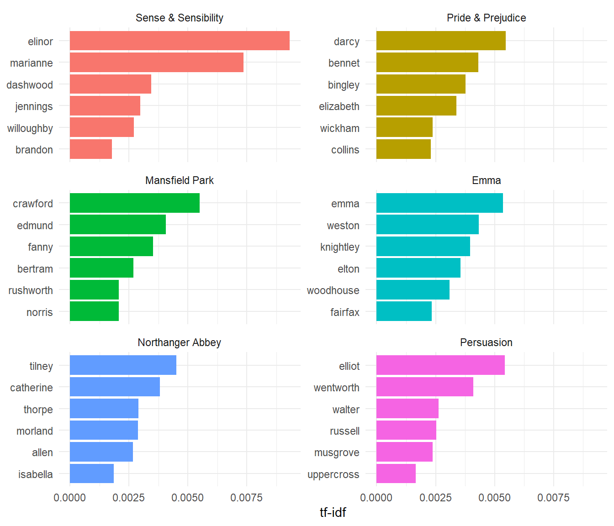
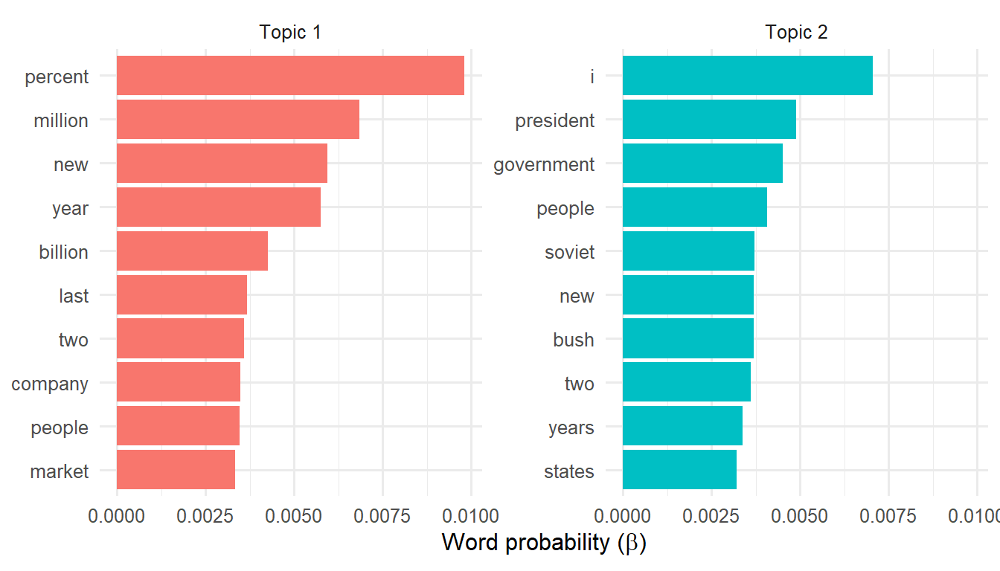

| Austen | n (Austen) | Wells | n (Wells) |
|---|---|---|---|
| miss | 1855 | time | 461 |
| time | 1337 | people | 302 |
| fanny | 862 | door | 260 |
| dear | 822 | heard | 249 |
| lady | 817 | black | 232 |
| sir | 806 | stood | 229 |
| day | 797 | white | 224 |
| emma | 787 | hand | 218 |
| sister | 727 | kemp | 213 |
| house | 699 | eyes | 210 |
10 Text as Data
10.1 Introduction
Imagine you work at an investment firm. Your task: review 500 quarterly reports and analyst reactions from companies in your portfolio. Identify emerging themes. Flag concerns. Recommend adjustments.
You cannot read 500 reports carefully. What do you do?
This is the fundamental challenge that text analysis addresses. A corpus of documents—whether quarterly reports, customer reviews, scientific papers, or novels—contains information that exceeds human capacity to process manually. Text analysis methods convert documents into numerical representations that enable systematic exploration, comparison, and discovery.
10.1.1 Two Eras of Text Analysis
Text analysis has undergone a fundamental transformation. In the classical era (roughly 1990s–2010s), statistical methods such as word counts, tf-idf, and topic models enabled computers to measure text while humans interpreted the results. These methods remain fast, interpretable, and scalable.
The LLM era (2020s–) introduced large language models capable of direct summarization, question answering, and classification. These models appear to understand text, but they are computationally expensive, less transparent, and prone to hallucination.
This chapter focuses on classical methods because understanding text-as-data makes you a better user of any text analysis tool, including LLMs. The concepts developed here—tokenization, term-document matrices, tf-idf, topic models—provide vocabulary for asking better questions and evaluating answers critically.
10.2 Text as High-Dimensional Data
To analyze text computationally, we must convert it to numbers. This conversion proceeds in three steps: tokenization (breaking text into units), vocabulary construction (identifying unique terms), and counting (recording which terms appear in which documents).
10.2.1 Tokenization
A token is a meaningful unit of text to be used as the unit of analysis. Typically, tokens are words, though they might also be sentences, n-grams (sequences of n consecutive words), or other units. Tokenization is the process of splitting text into tokens.
Consider the famous soliloquy from Shakespeare’s Macbeth (Act V, Scene V):
Show the code
macbeth_tokens <- macbeth |>
tidytext::unnest_tokens(word, text)
macbeth_tokens |> head(10)# A tibble: 10 × 2
line_id word
<int> <chr>
1 1 life's
2 1 but
3 1 a
4 1 walking
5 1 shadow
6 1 a
7 1 poor
8 1 player
9 2 that
10 2 struts The unnest_tokens() function from the tidytext package performs tokenization, converting each line of text into multiple rows—one per word. The function also converts words to lowercase and removes punctuation. The soliloquy yields 38 word tokens in total.
10.2.2 The Stop Words Problem
If we count word frequencies across the soliloquy, the most common words are unrevealing:
| Word | Count |
|---|---|
| a | 3 |
| and | 3 |
| is | 2 |
| an | 1 |
| but | 1 |
| by | 1 |
| frets | 1 |
| full | 1 |
Words like “a”, “is”, and “and” tell us nothing about Macbeth or the themes of the soliloquy. These are stop words—common words that provide grammatical structure but carry little semantic information. The tidytext package provides a data frame of such words:
Show the code
tidytext::stop_words |> head(10)# A tibble: 10 × 2
word lexicon
<chr> <chr>
1 a SMART
2 a's SMART
3 able SMART
4 about SMART
5 above SMART
6 according SMART
7 accordingly SMART
8 across SMART
9 actually SMART
10 after SMART Removing stop words reveals the content words:
Show the code
macbeth_meaningful <- macbeth_tokens |>
dplyr::anti_join(tidytext::stop_words, by = "word") |>
dplyr::count(word, sort = TRUE)
macbeth_meaningful# A tibble: 16 × 2
word n
<chr> <int>
1 frets 1
2 fury 1
3 heard 1
4 hour 1
5 idiot 1
6 life's 1
7 player 1
8 poor 1
9 shadow 1
10 signifying 1
11 sound 1
12 stage 1
13 struts 1
14 tale 1
15 told 1
16 walking 1Now we see words that evoke the soliloquy’s themes: shadow, player, stage, tale, sound, fury. The text has been converted to a form amenable to analysis.
10.2.3 Vocabulary and the Term-Document Matrix
Given a corpus of \(D\) documents, we define the vocabulary \(V\) as the set of unique terms appearing in at least one document. The term-document matrix (TDM) is a \(|V| \times D\) matrix where entry \(m_{v,d}\) records the count of term \(v\) in document \(d\).
\[ \underset{|V| \times D}{\mathbf{M}} = \begin{pmatrix} m_{1,1} & m_{1,2} & \cdots & m_{1,D} \\ m_{2,1} & m_{2,2} & \cdots & m_{2,D} \\ \vdots & \vdots & \ddots & \vdots \\ m_{|V|,1} & m_{|V|,2} & \cdots & m_{|V|,D} \end{pmatrix} \qquad(10.1)\]
The transpose—a \(D \times |V|\) matrix with documents as rows and terms as columns—is called a document-term matrix (DTM). The quanteda package uses the term document-feature matrix (DFM) to emphasize that features need not be single words.
10.2.4 Connection to Part 2
The document-term matrix should look familiar from Part 2. It is simply another feature matrix where each document is an observation (row in DTM form) and each term is a feature (column). Everything we learned about high-dimensional data applies: PCA can find directions of variation, clustering can group similar documents, and distance measures can compare documents.
The distinctive property of text data is extreme sparsity. Most words do not appear in most documents. A vocabulary of 10,000 terms across 1,000 documents yields a matrix with 10 million entries, but typically 99% or more are zeros. Specialized data structures (sparse matrices) and algorithms are essential for efficient computation.
10.2.5 Example: Associated Press Articles
The topicmodels package includes a document-term matrix of 2,246 Associated Press articles with a vocabulary of 10,473 terms. The eda4mldata package provides this data in tidy format:
Show the code
ap_tidy <- eda4mldata::ap_tidy
ap_tidy# A tibble: 302,031 × 3
document term count
<int> <chr> <dbl>
1 1 adding 1
2 1 adult 2
3 1 ago 1
4 1 alcohol 1
5 1 allegedly 1
6 1 allen 1
7 1 apparently 2
8 1 appeared 1
9 1 arrested 1
10 1 assault 1
# ℹ 302,021 more rowsThis tidy representation has one row per (document, term) pair, with columns for the document index, term, and count. The sparsity is evident: of the potential \(2246 \times 10473 \approx 23.5\) million entries, only about 302,000 are non-zero—a sparsity of 99%.
10.3 Which Words Matter? TF-IDF
Raw word counts have a fundamental limitation: the most frequent words across any corpus are stop words and near-stop words that appear in every document. We need a measure that identifies words distinctive to particular documents.
10.3.1 Term Frequency
Term frequency measures how prominent a term is within a single document:
\[ \text{tf}(t, d) = \frac{n_{t,d}}{\sum_{t'} n_{t',d}} \qquad(10.2)\]
where \(n_{t,d}\) is the count of term \(t\) in document \(d\), and the denominator is the total number of terms in document \(d\). High term frequency indicates the term is prominent in this document—but “the” has high term frequency in every document.
10.3.2 Inverse Document Frequency
Inverse document frequency measures how rare a term is across the corpus:
\[ \text{idf}(t) = \log \frac{|D|}{|\{d : t \in d\}|} \qquad(10.3)\]
where \(|D|\) is the total number of documents and \(|\{d : t \in d\}|\) is the number of documents containing term \(t\). If a term appears in all documents, \(\text{idf} = \log(1) = 0\). If a term appears in only one document, \(\text{idf} = \log(|D|)\), which is large. The logarithm dampens the effect of very rare terms.
The IDF measure connects to information theory from Chapter 6. A term appearing in all documents conveys no information about which document we are examining; a rare term conveys substantial information. The IDF is essentially the log-inverse of the term’s document probability—a measure of surprisal.
10.3.3 TF-IDF: The Product
Combining these measures yields tf-idf:
\[ \text{tf-idf}(t, d) = \text{tf}(t, d) \times \text{idf}(t) \qquad(10.4)\]
A term has high tf-idf if it is frequent in this document (high tf) AND rare across the corpus (high idf). This product surfaces distinctive words—terms that characterize a particular document relative to the corpus.
10.3.4 Example: Jane Austen’s Novels
To illustrate tf-idf, we compute it for each word in each of Jane Austen’s six novels, treating each novel as a separate document:

The results are striking: each novel’s most distinctive words are character names. “Emma” and “Harriet” distinguish Emma; “Elinor” and “Marianne” distinguish Sense and Sensibility; “Elizabeth” and “Darcy” distinguish Pride and Prejudice. TF-IDF automatically surfaces what makes each document unique—in this case, the characters around whom each novel revolves.
For the investment analyst reviewing quarterly reports, tf-idf would surface company-specific terminology, unusual product names, and distinctive risk language—precisely the information needed to identify what makes each report different from the others.
10.4 Finding Themes: Topic Models
TF-IDF identifies distinctive individual words. But words cluster into themes: “inflation”, “rates”, “Fed”, and “monetary” might all relate to macroeconomic concerns; “supply”, “chain”, “shortage”, and “logistics” might relate to supply chain issues. Topic models discover such latent themes automatically.
10.4.1 The Topic Model Idea
A topic model makes two key assumptions:
Each document is a mixture of topics. The topics in a single news article might be 60% business, 30% politics, and 10% sports. A quarterly report might be 40% financial performance, 30% strategic outlook, and 30% risk factors.
Each topic is a mixture of words. The “business” topic assigns high probability to words like “market”, “profit”, and “growth”; the “politics” topic assigns high probability to “congress”, “vote”, and “campaign”.
Given a corpus, a topic model discovers both the topics (as distinct probability distributions over words) and the distribution of topics within each document.
10.4.2 Latent Dirichlet Allocation
The most common topic model is Latent Dirichlet Allocation (LDA). Yes—the other LDA! Chapter 9 introduced Linear Discriminant Analysis, a supervised method for classification. Latent Dirichlet Allocation is unsupervised, discovering structure without labels. The name reflects the method’s components:
- Latent: The topics are hidden; we infer them from observed word patterns.
- Dirichlet: The probability distributions governing topic and word mixtures follow the Dirichlet distribution (a generalization of the beta distribution to multiple categories).
- Allocation: Words are allocated to topics probabilistically.
The intuition behind LDA is a generative story: imagine each document was generated by first choosing a mixture of topics, then for each word position, rolling the dice to select a topic and sampling a word from that topic’s distribution. LDA inverts this process, inferring the topics that best explain the observed documents. Chapter 11 develops this model in depth; here we illustrate what topic models reveal.
10.4.3 Example: AP News Articles with K = 2 Topics
We fit an LDA model with \(K = 2\) topics to the Associated Press articles:

Topic 1’s most probable words—percent, million, billion, company, market—suggest business and finance. Topic 2’s most probable words—president, government, party, members, congress—suggest politics and government. The algorithm knew nothing about these categories; it discovered them from patterns of word co-occurrence.
Note that some words (“new”, “people”) appear prominently in both topics. This is expected: topics are distinct probability distributions across the entire vocabulary, but may nevertheless share some prominent terms. The power of topic models lies in using them to identify words that are topic-specific, an thus to interpret model-generated topics as themes.
10.4.4 Choosing K
Like \(K\)-means clustering, LDA requires the user to specify the number of topics \(K\). Too few topics yield themes that are too broad, mixing unrelated content. Too many topics yield themes that are too narrow, fragmenting coherent content.
Practical approaches to choosing \(K\) include domain knowledge (“I expect 5–10 themes in this corpus”), coherence metrics (do top words in each topic make sense together?), and iterative exploration (fit models with several values of \(K\) and compare). Chapter 11 discusses these considerations further.
10.5 The LLM Perspective
Large language models have transformed what is possible with text. Tasks that once required topic models—summarization, theme extraction, classification—can now be accomplished by prompting an LLM directly: “Summarize this quarterly report in three bullet points” or “What are the main concerns expressed in these customer reviews?”
Why, then, learn classical text analysis methods?
10.5.1 When Classical Methods Still Win
Classical methods retain important advantages in several scenarios:
Scale. Processing 100,000 documents with an LLM is slow and expensive. Classical methods—tokenization, tf-idf, topic models—process the same corpus in seconds or minutes.
Auditability. Classical methods produce explicit, reproducible statistics. A tf-idf score has a precise definition; a topic model’s word probabilities can be examined and validated. LLM outputs, by contrast, emerge from opaque processes that are difficult to audit or explain.
Exploration. When you don’t yet know what questions to ask, classical methods provide systematic exploration. What words are distinctive? What themes exist? How do documents cluster? These questions can be answered without formulating specific prompts.
Quantification. Classical methods produce precise statistics: tf-idf scores, topic proportions, similarity measures. These statistics enable downstream analysis, visualization, and comparison in ways that free-text LLM outputs do not.
In practice, classical methods often serve as a first pass—filtering, clustering, and characterizing a corpus before using LLMs for targeted deep dives on selected subsets.
10.5.2 How Classical Concepts Help with LLMs
Even when using LLMs for analysis, understanding text-as-data makes you more effective:
Ask better questions. “Which topics dominate this corpus?” is a topic model question. Understanding this framing helps you prompt LLMs more precisely.
Evaluate outputs critically. Is a term really distinctive? Is a theme coherent? Classical concepts provide frameworks for assessing LLM outputs.
Recognize failure modes. LLMs hallucinate; topic models produce incoherent topics. Understanding both failure modes helps you design robust workflows.
Design hybrid workflows. Use tf-idf to identify the most distinctive documents, then ask an LLM to summarize them. Use topic models to segment a corpus, then ask an LLM to characterize each segment. Classical and LLM methods complement each other.
10.5.3 A Modern Workflow
A contemporary text analysis workflow might proceed as follows:
- Explore vocabulary. What terms appear? How often? What are the stop words?
- Compute tf-idf. What distinguishes each document? Which documents are most distinctive?
- Topic model or cluster. What themes exist? How do documents group?
- LLM deep dives. Summarize key documents. Answer specific questions about selected subsets.
- Synthesize findings. Draw conclusions informed by both quantitative patterns and LLM-generated insights.
This workflow combines the scale and auditability of classical methods with the flexibility of LLMs.
10.6 Summary
This chapter introduced text as high-dimensional, sparse data amenable to the techniques developed in Parts 1 and 2 of this book.
Key concepts:
- Tokenization converts text to sequences of words (or other units).
- The document-term matrix represents a corpus as a feature matrix where each document is an observation and each term is a feature.
- Text data is extremely sparse—most words do not appear in most documents.
- TF-IDF identifies distinctive words by combining term frequency (prominence in a document) with inverse document frequency (rarity across the corpus).
- Topic models discover latent themes, treating documents as mixtures of topics and topics as mixtures of words.
- Classical methods and LLMs complement each other in modern text analysis workflows.
Key formulas:
\[ \text{tf}(t, d) = \frac{n_{t,d}}{\sum_{t'} n_{t',d}} \]
\[ \text{idf}(t) = \log \frac{|D|}{|\{d : t \in d\}|} \]
\[ \text{tf-idf}(t, d) = \text{tf}(t, d) \times \text{idf}(t) \]
Connections to earlier material:
| Part 1–2 Concept | Text Application |
|---|---|
| Feature matrix | Document-term matrix |
| Curse of dimensionality | Vocabulary size (10,000+ terms) |
| PCA | Topic models reduce dimensions |
| Clustering | Documents cluster by theme |
| Information theory | IDF relates to entropy/surprisal |
The Two LDAs:
Chapter 9 introduced Linear Discriminant Analysis—a supervised method that finds directions separating known classes. This chapter introduced Latent Dirichlet Allocation—an unsupervised method that discovers topics in text. Both involve “allocation” to categories; context makes the meaning clear.
10.7 Exercises
TF-IDF Interpretation. Using the Jane Austen tf-idf results: (a) Why are character names the most distinctive words? (b) What would happen to tf-idf scores if we combined all six novels into one document? (c) How might you modify tf-idf to find distinctive non-name words?
Comparing Authors. Design an analysis to compare the vocabularies of Jane Austen and H.G. Wells more systematically. What words are shared most? Least? Should stop words be included or excluded? What would tf-idf reveal if we treated each author’s collected works as a single document?
Topic Model Exploration. For the AP news articles: (a) What would you expect to see with \(K = 4\) topics instead of \(K = 2\)? (b) How would you validate whether the discovered topics are “good”? (c) Propose a metric for topic coherence.
Classical vs. LLM. Your firm has 10,000 customer reviews of a new product. (a) Design a workflow using only classical methods. (b) Design a workflow using only an LLM. (c) Design a hybrid workflow. Which approach would you recommend and why?
Investment Analyst Revisited. Return to the quarterly report scenario from the introduction: (a) What tf-idf patterns might indicate risk? Opportunity? (b) How would you track themes over time (Q1 → Q2 → Q3)? (c) What questions would you ask an LLM after classical exploration?
10.8 Resources
Text Mining with R: A Tidy Approach by Julia Silge and David Robinson. The authoritative guide to text analysis using tidytext and the tidyverse.
Latent Dirichlet Allocation by David Blei, Andrew Ng, and Michael Jordan. JMLR (2003). The foundational paper introducing LDA.
CRAN Task View: Natural Language Processing. Comprehensive listing of R packages for text analysis.
tidytext package documentation. Reference for the tidytext package used throughout this chapter.
quanteda package documentation. Reference for the quanteda package, which provides efficient data structures and functions for text analysis.
R Functions Reference:
| Function | Package | Purpose |
|---|---|---|
unnest_tokens() |
tidytext | Tokenize text |
bind_tf_idf() |
tidytext | Compute tf-idf |
stop_words |
tidytext | Data frame of common stop words |
anti_join() |
dplyr | Remove stop words |
dfm() |
quanteda | Create document-feature matrix |
LDA() |
topicmodels | Fit topic model |
tidy() |
tidytext | Convert to tidy format |